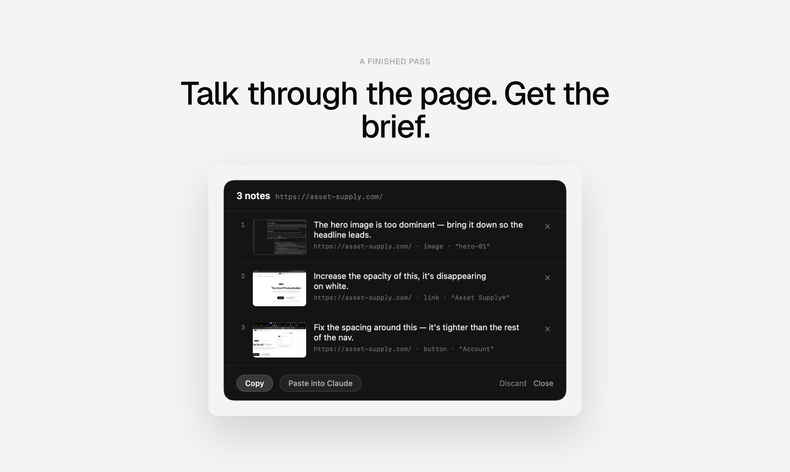
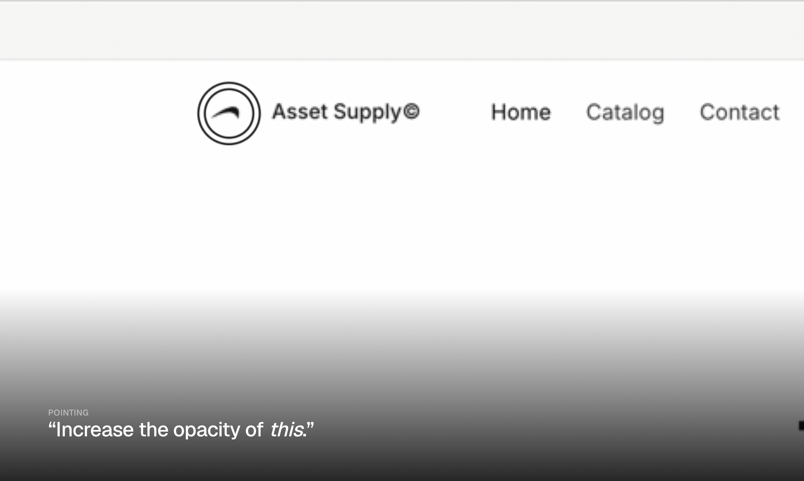
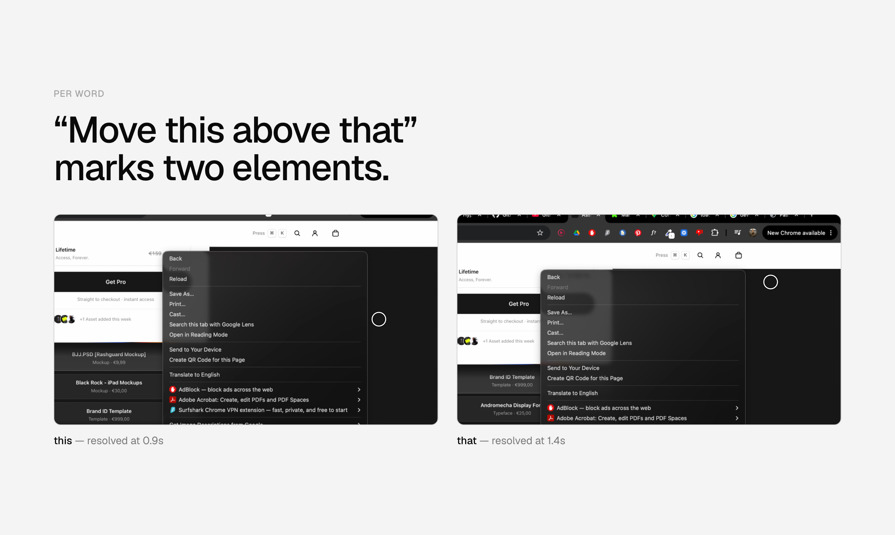

Staging · not published — how the launch reads in the feed
The row is the whole pitch — an icon, six words and a topic chip. If the tagline doesn't land here, the page below never gets read.
Staging · the product page
Talk through your UI. Get a brief your agent can act on.



Hold one chord and walk an interface out loud. Pass captures each remark with the page, the element, and a crop with a ring on what you pointed at — then hands it to Claude, Cursor or Codex. On device. It never sends anything for you.
Gallery order is deliberate: the finished output first, the ring second, the per-word proof third. The input method is never the lead.
I build interface systems, and most of my day is now spent telling a coding agent what's wrong with a screen. The reviewing takes seconds. Writing it down takes ten times longer — screenshot, crop, then a sentence explaining which of four similar buttons I meant.
Pass samples the cursor continuously and timestamps every word, so when you say "this" it knows what you were pointing at at that word. Say "move this above that" and two different elements get marked.
A pass is one take — pauses close notes and it keeps listening. Let go and you get a review panel. Copy it, or paste it into your agent and send it yourself. Nothing leaves the Mac unless you do.
Free while it's in beta. I'd like to know where transcription falls down on accents and jargon — that's the part I can't test alone.